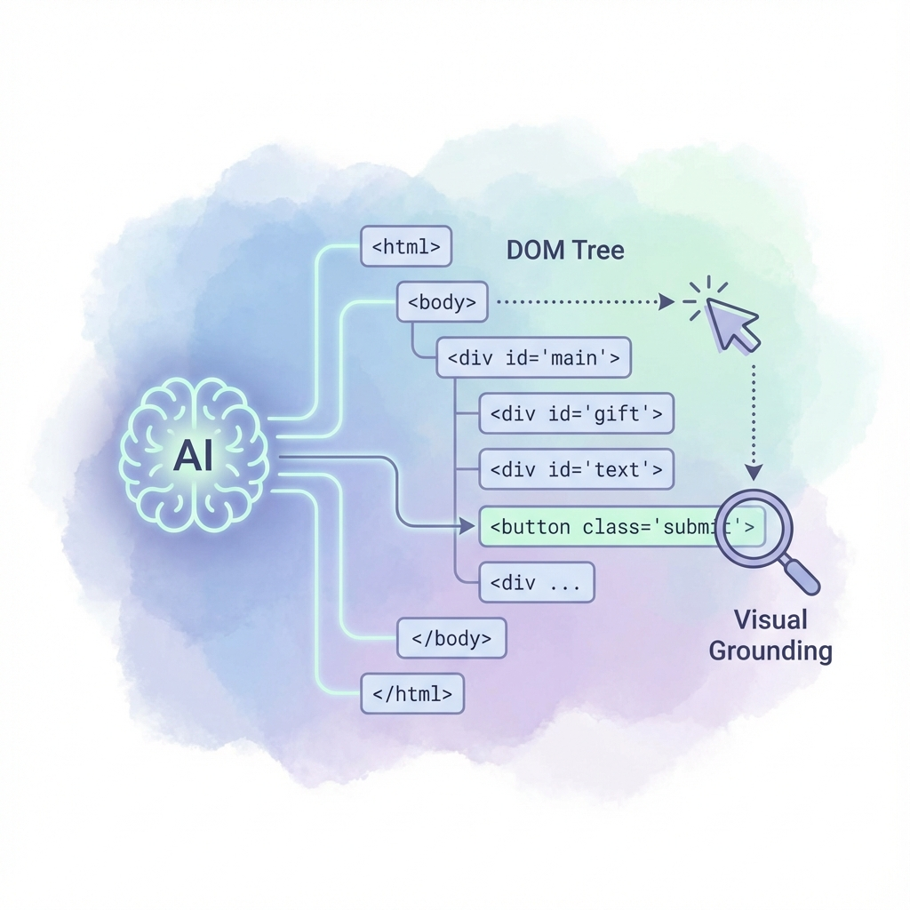
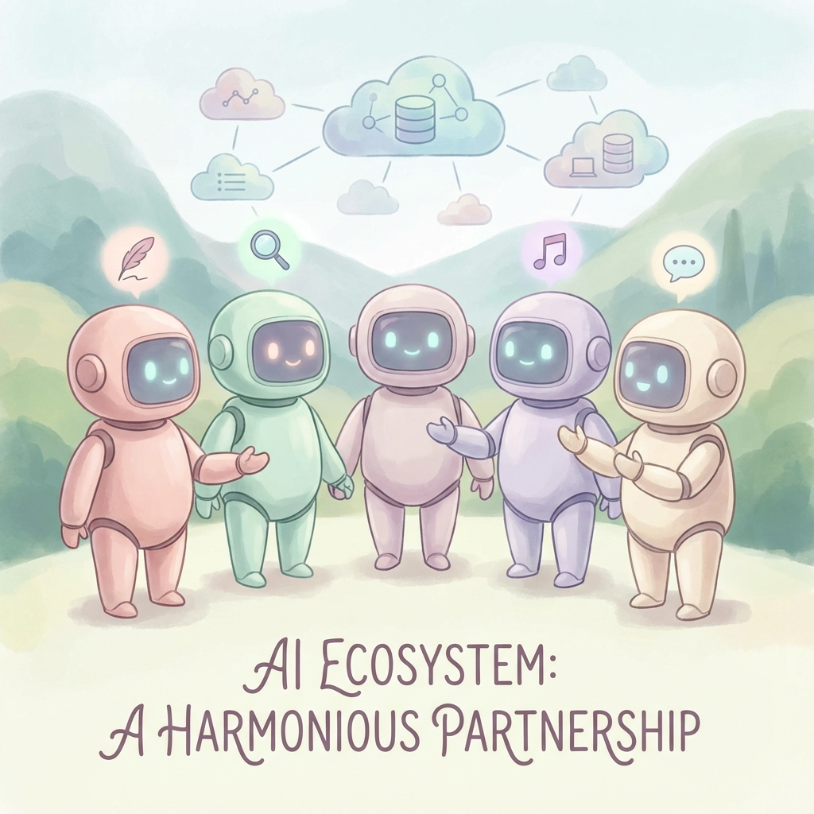

2023年から2024年にかけての生成AIブームは、主に「チャットボット」という形態で世界を席巻しました。しかし、2025年に入り、AIのパラダイムは新たなフェーズへと移行しています。それは、「対話（Chat）」から「実行（Action）」へのシフトです。
本報告書は、Anthropic社が公式にリリースした「Claude for Chrome」拡張機能を中心に、その技術的仕様、ユーザー体験、経済的影響、そして競合するサードパーティ製ツール（Sider、Monica等）を含めたエコシステム全体を網羅的に調査・分析するものです。
1. 序論：AI エージェント時代の幕開けとブラウザの再定義
1.1 背景：チャットボットからアクション・エージェントへ
従来のLLM（大規模言語モデル）は、あくまで外部の観察者でありアドバイザーでした。例えば、「飛行機のチケットを探して」と頼めば、候補をリストアップすることはできましたが、実際に予約サイトにアクセスし、日付を選択し、座席を指定する行為はユーザー自身の手に委ねられていました。この「ラストワンマイル」の断絶こそが、AIが真の労働力となるための障壁でした。
Anthropic社が提供する「Claude」シリーズ、特に2025年後半に展開が加速している「Claude 3.5 Sonnet」および「Opus 4.5」は、この壁を破壊する先兵となっています。彼らが提唱する「Computer Use（コンピュータ操作）」機能は、AIに視覚（スクリーンショットの解析）と操作能力（カーソル移動、クリック、キー入力）を与えることで、ブラウザを単なる閲覧ソフトから「AIが作業を行うためのオペレーティング・システム（OS）」へと再定義しようとしています。
1.2 本報告書の目的と構成
特に、日本のNoteユーザー層（クリエイター、エンジニア、ナレッジワーカー）が、月額100ドル（約1.5万円）という高額な「Maxプラン」に加入してまで公式拡張機能を導入すべきか、それとも既存の安価なツールで十分なのかという点について、徹底的な検証を行います。
2. 公式拡張機能「Claude for Chrome」の技術的解剖と機能詳細
2.1 概要と提供ステータス（2025年11月現在）
「Claude for Chrome」は、Anthropic社が開発したGoogle Chrome専用のブラウザ拡張機能であり、Claudeの推論能力をブラウザのサイドパネルに直接統合するものです。
機能項目
詳細仕様
対応プラットフォーム
Google Chrome (デスクトップ版のみ)
モバイル対応
非対応 (2025年11月時点)
必須プラン
Claude Max ($100/月 or $200/月), Team, Enterprise
主要モデル
Claude 3.5 Sonnet, Opus 4.5 (一部機能)
コア機能
ページ読み取り、DOM操作、自律ナビゲーション、背景実行
2.2 コアテクノロジー：「Computer Use」の実装メカニズム
本拡張機能の最大の特徴は、Anthropicが開発した「Computer Use」技術の実装にあります。

Computer Useによる視覚的グラウンディングとDOM操作の概念図
2.2.1 視覚的グラウンディング（Visual Grounding）
Claudeは、WebページをHTMLコード（DOMツリー）としてだけでなく、人間が見ているのと同じ「画像（スクリーンショット）」として認識します。モデルは画像解析を行い、目的のボタンや入力フォームのピクセル座標（X, Y）を特定します。これにより、HTML構造が複雑なシングルページアプリケーション（SPA）や、Canvas要素で描画されたグラフなど、従来のスクレイピングでは操作が困難だった要素に対しても、物理的なクリック操作をシミュレートできます。
2.2.2 自律的ナビゲーションとマルチステップ推論
「自律性（Autonomy）」は、本拡張機能の核となる価値提案です。例えば、「Amazonで『Ankerの充電器』を検索し、評価が4.5以上で価格が5000円以下の製品を3つピックアップして、それぞれの特徴を比較表にまとめて」という指示に対し、検索、フィルタリング、情報抽出、出力を自律的に行います。
2.2.3 バックグラウンド処理と非同期ワークフロー
Chromeブラウザが起動している限り、Claudeはユーザーがアクティブにしていないタブでも作業を継続できます。ユーザーが別ウィンドウで資料作成をしている間に、Claudeは裏で数十ページのリサーチを行うことが可能です。
3. セキュリティアーキテクチャとリスク管理
3.1 「高リスク」ドメインのブロック機能
Anthropicは特定のカテゴリを「高リスク（High-Risk）」と定義し、拡張機能の動作を制限しています。金融サービス、医療・健康情報、政府機関、成人向けコンテンツなどが対象で、これらのサイトでは介入機能が働き、操作を拒否するか、閲覧（Read-only）モードに限定されます。
3.2 プロンプトインジェクションへの防御と限界
Web上の悪意あるコンテンツが、AIに対して隠された指示（プロンプトインジェクション）を与えるリスクがあります。Anthropicは防御策を導入していますが、2025年時点のレポートでは、依然として攻撃の11.2%が防御をすり抜ける可能性があると報告されています。そのため、データの削除や購入の確定など、不可逆的なアクションを実行する直前には、ユーザーにポップアップで承認を求める「Human-in-the-loop」の仕組みが実装されています。
4. 経済的障壁：「Maxプラン」の衝撃とROI分析
4.1 料金プランの構造的変化（2025年版）
プラン
月額料金 (個人)
Chrome拡張機能
主なターゲット
Free
$0
× 利用不可
お試しユーザー
Pro
$20
× 利用不可
一般的なヘビーユーザー
Max (5x)
$100
○ 利用可能
開発者、アナリスト
Max (20x)
$200
○ 利用可能
研究機関、AIパワーユーザー
Team
$30/user (min 5)
○ 利用可能
企業・組織
4.2 なぜ月額100ドルなのか？
「100ドルは高すぎる」という反応は自然ですが、画像処理のトークンコストや、1つのタスクで数十回のループ処理を行うことを考慮すると、API従量課金よりも安価になるケースがあります。Maxプランは、APIの青天井な課金を恐れることなく、固定費で大量のエージェント操作を行える「定額使い放題（上限あり）」パッケージとして設計されています。
4.3 投資対効果（ROI）のシミュレーション
- ソフトウェアエンジニアの場合： コーディング、デバッグ、ドキュメント参照の自動化により、月間で5時間の「単純作業」を削減できれば十分に元が取れます。
- Webリサーチャー/マーケターの場合： 競合他社の価格調査やニュースのモニタリングを毎日行う場合、100ドルは破格の安さとなります。
- 一般的な事務・ライターの場合： 「記事の要約」や「メールの下書き」程度であれば、Siderや無料のChatGPTで十分であり、100ドルの投資回収は困難かもしれません。
5. パフォーマンスとユーザー体験の実態：光と影
5.1 速度とレイテンシの壁
多くのユーザーが指摘する最大の欠点は「速度」です。AIが「画面を見る → 考える → マウスを動かす」という1サイクルを実行するのに、数秒〜十秒程度のラグが発生します。「リアルタイムでの共同作業」としてはストレスが溜まりますが、「裏で回しておくバッチ処理」としては許容範囲という意見が多いです。
5.2 成功率とエラー
ポップアップ広告や想定外のCookie同意バナーが出ると、AIが処理停止したり、無限ループに陥ったりすることがあります。これに対し、Claude Codeなどでは「コンテキストのクリーンアップ」コマンドなどがユーザーコミュニティによって開発されています。
6. サードパーティ製エコシステムの台頭：SiderとMonica

多様化するブラウザAIエージェントのエコシステム
6.1 Sider: オールインワンAIサイドバーの覇者
Siderは、GPT-4o, Claude 3.5 Sonnet, Gemini 1.5 Pro, DeepSeek V3など、主要なLLMを自由に切り替えて使用できるのが強みです。ChatPDF、YouTube要約、APIベースのDeep Research Agentなど、実用的な機能を多数搭載しており、月額20ドル程度とリーズナブルです。
6.2 Monica: ビジネス・ライティングのパートナー
Monicaは、特にライティング支援やソーシャルメディア連携に強みを持ちます。80以上のテンプレートを持ち、メール返信やブログ記事のドラフト作成を支援します。
6.3 比較表：公式 vs サードパーティ
比較軸
Anthropic公式
Sider / Monica
主な役割
Agent (実行者)
Assistant (支援者)
ブラウザ操作
◎ 物理的なクリック・入力が可能
△ 限定的 (APIベース)
視覚認識
◎ スクリーンショットベースの完全理解
○ テキスト抽出・一部Vision対応
利用モデル
Claudeシリーズのみ
GPT, Claude, Gemini等切替可
処理速度
遅い
速い
コスト
高額 ($100/月～)
安価 (無料～$20/月)
7. 実践ユースケース詳解
7.1 エンジニアによる「自律デバッグ」
Claudeに「このページのヘッダーがスマホ表示で崩れる原因を調べて」と指示すると、DevTools的な視点で解析し、原因特定から修正案の提示、さらにはGitHubでのPR作成までを行うことが可能です。コンテキストのスイッチコストが激減し、開発者は「設計」に集中できます。
7.2 マーケターによる「競合定点観測」
「いつもの5社のサイトをチェックして、先週からの更新箇所をスプレッドシートに追記して」と指示すれば、Claudeはバックグラウンドで各サイトを巡回し、新着ニュースを抽出して自動入力します。RPAの構築コストをかけることなく、自然言語だけで自動化が実現します。
7.3 ナレッジワーカーの「ディープリサーチ」
「『2025年の生成AIトレンド』について、信頼できるソースを検索してレポートを作成して」と指示すれば、複数の記事を読み込み、内容を統合して構造化されたレポートを生成します。「情報の探索」と「統合」の時間を短縮し、「洞察の導出」に時間を割けるようになります。
8. テクニカル・ディープダイブ
8.1 Model Context Protocol (MCP) の重要性
MCPは、AIモデルが外部のデータやツールと接続するための標準プロトコルです。開発者は独自のMCPサーバーを立てることで、Claudeに「社内データベースへのアクセス権」や「特定の業務アプリの操作権」を追加することができます。
8.2 Agent Skills
Anthropicは「Agent Skills」という概念を導入しており、これによりエージェントに特定のタスク（例：GitHubの操作、SQLの実行）を教え込むことができます。これらを組み合わせることで、より専門的なワークフローが実現されていくと予想されます。
9. 結論と提言：あなたはこの「魔法」に課金すべきか？
Note読者へのセグメント別推奨
- 一般のNoteクリエイター・ライター・学生の方： No（時期尚早）。月額1.5万円のコストに見合うメリットは薄く、SiderやMonicaで十分です。
- スタートアップ経営者・マーケター・リサーチャーの方： Maybe（試す価値あり）。秘書やアシスタントを雇う代わりと考えれば、コストパフォーマンスは劇的に高いです。
- エンジニア・データサイエンティストの方： Yes（必携ツールになる可能性大）。「Computer Use」は開発者のワークフローを根本から変えるポテンシャルがあります。
総括
Claude for Chrome拡張機能の登場は、インターネットの歴史における重要な転換点を示唆しています。ウェブサイトは「人間が見て操作すること」を前提としたものから、「AIが読み取り操作するAPI」のような存在へと変化していくでしょう。
現時点でのClaude for Chromeは、まだ動作が遅く、コストも高い「新人のアシスタント」ですが、その学習速度は人間を遥かに凌駕します。2025年の今、この「新人」を雇い入れ、共に働く作法を身につけることは、来るべきAIネイティブ時代に向けた最も有効な先行投資となるはずです。